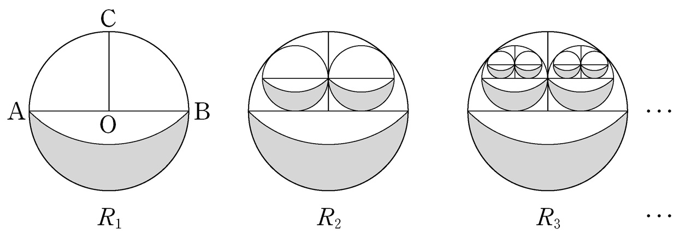

- \(10\)
- \(9\)
- \(8\)
- \(7\)
- \(6\)
Mathematics (Type Na)
What is the probability that the test score of this student
is between \(475\) and \(550\) points (inclusive),
computed with the standard normal table to the right?
[3 points]
| \(z\) | \(\mathrm{P}(0\!\leq\! Z \!\leq\!z)\) |
|---|---|
| \(1.0\) | \(0.3413\) |
| \(1.5\) | \(0.4332\) |
| \(2.0\) | \(0.4772\) |
| \(2.5\) | \(0.4938\) |
- \(0.7745\)
- \(0.8185\)
- \(0.9104\)
- \(0.9270\)
- \(0.9710\)
Consider a circle with center \(\mathrm{C}\) that passes through points \(\mathrm{A}\) and \(\mathrm{B}\). Obtain figure \(R_1\) by coloring the
 shape outside this circle inside circle \(\mathrm{O}\).
shape outside this circle inside circle \(\mathrm{O}\).
Starting from figure \(R_1\), bisect the ‘upper half(that does not contain the colored region)” of circle \(\mathrm{O}\). Draw two circles inscribed in each quarter of the circle. Apply the process of obtaining figure \(R_1\) to the newly drawn two circles respectively, and obtain figure \(R_2\) by coloring the two
shapes.
Starting from figure \(R_2\), bisect the ‘upper half’ of each newly drawn circles. Draw four circles inscribed in each quarter of the two circles. Apply the process of obtaining figure \(R_1\) to the newly drawn four circles respectively, and obtain figure \(R_3\) by coloring the four
shapes.
Continue this process, and let \(S_n\) be the area of the colored region in \(R_n\), the \(n\)th obtained figure. What is the value of \(\displaystyle\lim_{n\;\!\to\;\!\infty}S_n\)? [4 points]

- \(\dfrac{5+2\sqrt{2}}{7}\)
- \(\dfrac{5+3\sqrt{2}}{7}\)
- \(\dfrac{5+4\sqrt{2}}{7}\)
- \(\dfrac{5+5\sqrt{2}}{7}\)
- \(\dfrac{5+6\sqrt{2}}{7}\)